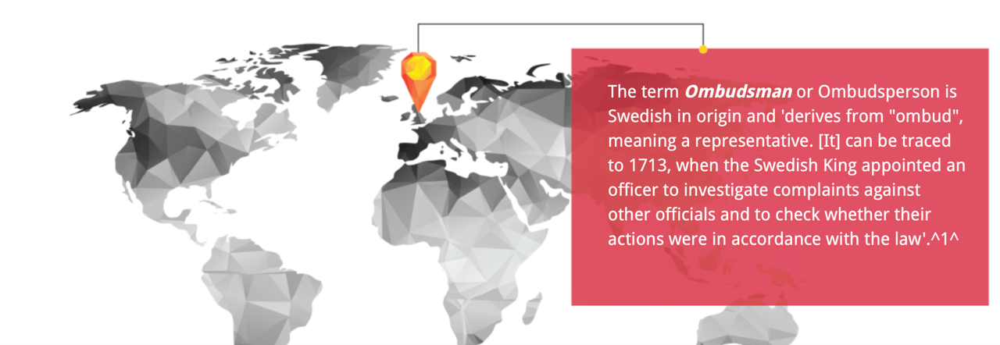
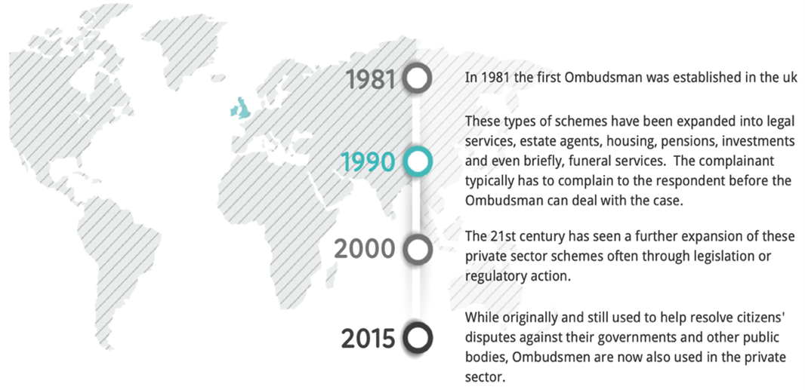
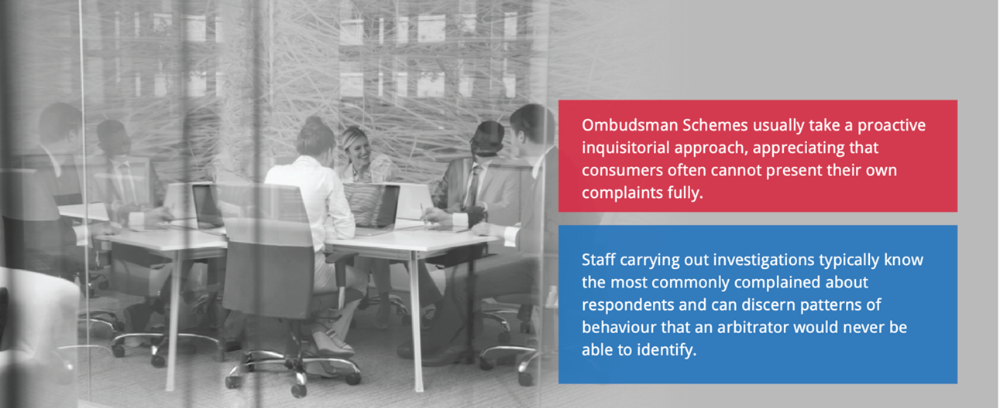
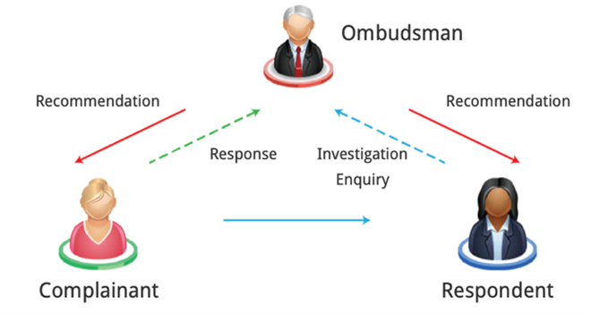

Ombudsman 监察专员
Questions: select the answer you consider to be correct.
Q1 :What kind of dispute is most likely to be resolved by an Ombudsman service? 什么样的争议最有可能由监察专员服务解决？
(1)A dispute between a husband and wife. 丈夫和妻子之间的争执
(2)A dispute between a consumer and their energy company. 消费者与其能源公司之间的纠纷
(3)An intellectual property dispute between two multinational companies. 两家跨国公司之间的知识产权纠纷
(4)All of these.以上都是。
A1: the correct answer is (2)
While originally and still used to help resolve citizens’ disputes against their governments and other public bodies, Ombudsmen are now also used in the private sector. 虽然监察专员最初是用来帮助解决公民与政府和其他公共机构之间的纠纷，但现在也用于私营部门。
Q2 :Which of the following statements accurately describes an Ombudsman scheme? 下列哪项表述准确地描述了监察专员计划？
(1)The Ombudsman takes a proactive inquisitorial approach to investigating the case. 监察专员采取积极主动的调查方式调查案件
(2)The Ombudsman helps facilitate a joint decision by the parties. 监察专员协助促成当事各方共同作出决定
(3)The Ombudsman is always required to apply the law. 监察专员总是被要求适用法律
(4)All of these.以上都是。
A1: the correct answer is (1)
Ombudsman takes a proactive inquisitorial approach to investigating the case. 监察专员采取积极主动的调查方式调查案件
Q3 :What is the difference in the way private and public sector Ombudsman schemes work? 私营及公营机构监察专员计划的运作方式有何不同？
(1)Public sector schemes lack the power to bind the parties. 公共部门计划缺乏约束各方的权力
(2)Complex scientific and technical issues. 复杂的科学和技术问题
(3)Complex business or economic issues. 复杂的商业或经济问题
(4)All of these.以上都是。
A1: the correct answer is (1)
Congratulations! 恭喜！
You have achieved a basic understanding of the Ombudsman process. 你已对监察专员的程序有了基本的了解
You have learned the following: 你学到了以下内容：
(1)Originally, Ombudsman helped resolve citizen’s disputes against their governments and other public bodies but now are also used to resolve disputes in the private sector. 最初，监察专员帮助解决公民对政府和其他公共机构的纠纷，但现在也用于解决私营部门的纠纷
(2)The ombudsmen can discern behaviour patterns in clients that maybe an arbitrator would not identify. 监察专员可以识别委托人的行为模式，而这些模式可能仲裁员无法识别
(3)The private ombudsmen resolve complaints brought by consumers or small businesses up to certain maximum award limits. 私人监察员解决消费者或小企业提出的投诉，最高赔偿限额为一定的上限
(4)Public sector schemes lack this power to bind the parties. They can only make recommendations which the respondents can ignore. 公共部门的计划缺乏这种约束各方的力量。他们只能提出被调查者可以忽略的建议。
What is the aim of this module?
Understanding how Ombudsman works and what the outcomes of this mechanism are. 了解监察专员的工作方式以及该机制的结果
The term Ombudsman or Ombudsperson is Swedish in origin and ‘derives from “ombud”, meaning a representative. It can be traced to 1713, when the Swedish King appointed an officer to investigate complaints against other officials and to check whether their actions were in accordance with the law’. Ombudsman(监察专员)或者Ombudsperson（监察专员） 一词起源于瑞典语，“源自ombud”,意思是代表。这可以追溯到1713年，当时瑞典国王任命了一名官员来调查对其官员的投诉，并检查他们的行为是否符合法律。
Under the Swedish Constitution, the Ombudsman is ‘to act as the attorney of Parliament and to control the observance of laws and regulations insofar as these are applicable by persons subject to official responsibility’. Ombudsmen now hold important dispute resolution roles in many industrialised nations. 根据瑞典宪法，监察专员的职责是“充当议会的代理人并管理法律和法规的遵守情况，只要这些规定适用于负有官方责任的人员”。监察专员现在在许多工业化国家发挥着重要的争议解决作用。
1981:
In 1981, the first Ombudsman was established in the UK. 在1981年，英国设立了第一个监察专员办公室
1990:
These types of schemes have been expanded into legal services, estate agents, housing, pensions, investments and even briefly, funeral services. The complainant typically has to complain to the respondent before the Ombudsman can deal with the case. 这些类型的计划已经扩展到法律服务、房地产经纪人、住房、养老金、投资，甚至短暂地扩展到丧葬服务。通常投诉人必须先向被投诉人投诉，然后监察专员才能处理这个案件。
2000:
The 21st century has seen a further expansion of these private sector schemes often through legislation or regulatory action. 21世纪，这些私营部门的计划通常通过立法或监管行动进行进一步扩张。
2015:
While originally and still used to help resolve citizens’ disputes against their governments and other public bodies, Ombudsmen are now also used in the private sector. 虽然监察专员最初是用来帮助解决公民与政府和其他公共机构之间的纠纷，但现在也用于私营部门。
Ombudsman Schemes usually take a proactive inquisitorial approach, appreciating that consumers often cannot present their own complaints fully. 监察专员计划通常采取积极主动的调查方式，因为消费者往往无法充分提出自己的投诉。
Staff carrying out investigations typically know the most commonly complained about respondents and can discern patterns of behaviour that an arbitrator would never be able to identify. 进行调查的工作人员通常知道常被抱怨的调查对象，并且可以辨别出仲裁员永远无法识别的行为模式。
There is a basic difference in the way in which the private sector and public sector schemes work. 私营部门和公共部门计划的运作方式存在根本区别。
The private Ombudsmen resolve complaints brought by consumers or small businesses up to certain maximum award limits often with the power to make recommendations as to further compensation. Their decisions bind the respondents only if the complainant accepts and not the other way around. 私人监察专员解决消费者或小型企业提出的投诉，但不超过一定的最高赔偿限额，通常有权就进一步赔偿提出建议。他们的裁决只有在投诉人接受的情况下才能约束调查对象，而不是反过来。
Public sector schemes lack the power to bind the parties. They can only make recommendations which the respondents can ignore although not usually without giving a reason for doing so. ‘Many “non-binding recommendations” have led to system changes, official apologies and compensation payments… to aggrieved individuals.’ 公共部门计划缺乏约束各方的权力。他们只能提出调查对象可以忽略的建议，虽然通常不会在没有给出理由的情况下提出建议。许多“不具约束力的建议”导致了制度的改变，官方道歉和对受害个人的赔偿。
Typically, the Ombudsman is bound to have regard to — but is not required to apply — the law although there are exceptions to this. In particular, almost all schemes are entitled to ignore legal restrictions on compensation for distress and inconvenience. 通常情况下，监察专员有义务考虑（但不一定要适用）法律，虽然有例外情况。特别是，几乎所有的计划都有权无视对痛苦和不便的的赔偿的法律限制。
Roles in the Ombudsman process 监察专员程序中的角色
The Complainant should first send a complaint to the relevant organisation and give them the opportunity to comment on the case and resolve the problem. 投诉人应首先向有关机构提出投诉，并让他们有机会就个案提出意见和解决问题。
If the company’s feedback on the complaint is not acceptable to the complainant he can forward the case to an Ombudsman. He will further investigate the way the organisation has dealt with the situation. 如果投诉人不能接受公司对投诉的反馈，他可以将案件转交给监察专员。他将进一步调查该组织处理这一情况的方式。